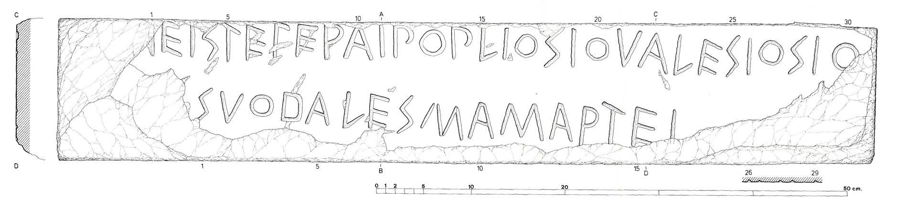

Collocazione attuale
Roma Museo Nazionale Romano, Terme di Diocleziano, inv. scavo SA77-01.Decorazione
non presenteStato di conservazione
mutiloDati archeologici
Descrizione del Supporto
Blocco di tufo compatto grigio-chiaro ('cappellaccio'). 87-87.8 cm 15-16.5 cm 62.5-63.2 cm
Provenienza
Rinvenuta nel 1977 come pietra di reimpiego nelle fondazioni della peristasi orientale del tempio (II) di Mater Matuta, sull'acropoli di Satricum.
Ultima autopsia: Museo Nazionale Romano - Terme di Diocleziano, Roma.
Datazione
ultimo quarto del VI secolo a.C.Foto


Apografo
Trascrizione
File sorgente prodotto da: EAGLE - Europeana Network of Ancient Greek and Latin Epigraphy See this file in GIT.
Apparato critico
Dalla documentazione dello scavo è emersa una foto in cui il Lapis, secondo Colonna
1995, Tav. XLVII, appare più estesamente conservato in alto a sinistra di quanto non
mostrino le altre foto finora pubblicate. La foto, scattata quando la pietra era ancora
in situ, dimostrerebbe allora che due sono stati i momenti di danno: uno all’atto
dello scavo e uno durante la successiva estrazione del pezzo. Nel 1991 questa foto
viene pubblicata senza commento da C.M. Stibbe e discussa nel 1994 da Waarsenburg
(cfr. Waarsenburg 1996). Nel 1995 G. Colonna, su un ingrandimento dell’angolo interessato,
non solo recupera la sua prima lettura di i prima del segmento -ei: “Si osserva chiaramente
che la scheggia d’angolo andata perduta conteneva la parte superiore del segno controverso,
che è inequivocabilmente una i, ben conservata in tutto il suo sviluppo” ma aggiunge
anche che “A sinistra della i si intravede un’altra lettera, che sembra essere una
u asimmetrica, con il tratto destro più corto del sinistro, forse per preoccupazioni
di spazio”. L’anno successivo però De Waele 1996:233 osserva “On a photo, made before
the stone was removed he (i.e. Waarseburg) believed that he could distinguish the
impression of the apex of a V-shaped letter. This observation is not correct, because
it is due to the shadow of a grass-stalk”. E nella nota riferita al lavoro di Waarseburg
aggiunge che anche un ingrandimento della foto portava alle stesse conclusioni. Le
analisi effettuate su nostra richiesta al Department of Classics e del Department
of Computer Science dell’University of Florida, da parte di Eleni Bozia e Angelos
Barmpoutis, non hanno però sciolto i dubbi a causa della cattiva qualità dell’immagine.
Non possiamo perciò attribuire alle nuove informazioni un valore probatorio ;
Contro la presenza di una i si è espresso Prosdocimi che, in seguito ad un esame autoptico,
afferma che il tratto è meno profondo di tutti i tratti dell’incisione. Anche Lucchesi-Magni
2002:25 parlano di “traccia di un’asta verticale, dal ductus pressoché retto e parallelo
alle aste verticali delle lettere successive, la cui profondità appare tuttavia inferiore
a quella delle altre”. Da parte nostra, l’ultima autopsia (maggio 2009) ha confermato,
mediante l’uso di una luce radente, la presenza del tratto verticale. ; [Laiu]ei ; [Iun] ịei ; [Matr]ei
Tipo di Iscrizione
dedicaDati epigrafici
Posizione iscrizione: Iscrizione sulla faccia anteriore del blocco prodotta con scalpello con solco largo cm 0,5, profondo cm 0,02 (leggero o pesante?) con tipica sezione a V.Ductus: destrorso.
Segni divisori: nessuno.
Scriptura: Le lettere hanno un'altezza di 3.1-4.8 cm. Le O hanno un diametro di 2.3-2.8 cm.
Commento epigrafico
E: asta verticale prolungata oltre il piede, tratti orizzontali inclinati verso il basso.
S: uno dei segni più frequenti sul Lapis; regolarmente a tre tratti, piuttosto angoloso, sempre progressiva rispetto al ductus dell’iscrizione.
T: sempre con traversa discendente, in accordo con la direzione della scrittura, e piuttosto sviluppata.
R: in forma di rho, con occhiello piccolo, arrotondato e chiuso.
A: forma triangolare con traversa sempre discendente, in accordo con la direzione della scrittura.
P: occhiello aperto arrotondato, “arcuata”.
O: costantemente arrotondata e più piccola rispetto alle altre lettere.
L: appoggio piuttosto sviluppato in lunghezza che con l’asta verticale forma un angolo acuto.
V: sempre con tratti simmetrici e nessuna coda.
D: forma arrotondata, con enfasi bassa, piuttosto ampia rispetto agli altri esempi della stessa lettera nelle altre iscrizioni latine arcaiche.
M: a quattro tratti.
Bibliografia:
Prima segnalazione
Stibbe 1978, 56-59.Editio princeps
Stibbe 1980.Altra Bibliografia
Stibbe 1978, 56-59; Stibbe 1980; Peruzzi 1978, 346-350; De Simone 1978, 95-98; Bonfante 1978, 269-272; Pisani 1978, 23; Prosdocimi 1979, 218-222; Versnel 1980, 223-232; Guarducci 1980, 479-489; Pisani 1981, 136-140; De Simone 1981, 25-56; de Waele 1981, 48; de Waele 1981, 677-682; de Waele 1981, 40; Peters 1981, 102; Radke 1981, 98; Stibbe 1982, 176, nr. 343; Versnel 1982, 192-235; Bloch 1983, 362-371; Prosdocimi Devoto 1983, LV-XCVIII; LXIII-LXV; Colonna 1984, 104-106; Marinetti 1984, 26-27; Prosdocimi 1984, 183-230; Campanile 1985, 89-98; Rix 1985, 195; Coleman 1986, 100-131; Ferenczy 1987, 97-108; Wachter 1987, 75-80, §29; AE 1989, 152; Cristofani 1990, 23-24; Lejeune 1990, 60-63; Romano 1990, 53; Versnel 1990; Flobert 1991, 531-534; Stibbe 1991, 26, fig. 7; AE 1993, 449; De Simone 1993, 285-288; Prosdocimi 1993, 324-327; Silvestri 1993, 109; AE 1994, 383; Prosdocimi 1994, 365-377; Urbanová 1994, 119-125; AE 1995, 292-293; Coarelli 1995, 210-211; Colonna 1995, 350-351; Sihler 1995, 15; De Simone 1996, 247-253; AE 1996, 399; de Waele 1996, 233; Versnel 1996, 46-61; Waarsenburg 1996, 5-9; De Simone 1997, 201-203; Levi 1997, Cap. V; Versnel 1997, 177-197; Waarsenburg 1997, 198-200; De Simone 1996 [1998], 61; Karaseva's 1998, 200-212; Meiser 1999, 4, 127, 218; Urbanová 1999, 481; Baldi 2002, 20, 204-206; Lucchesi 2002; Friggeri 2003, 23; Hartmann 2005, 138-142; Gnade 2008; Colonna 2008, 98-99 e 194-197, nr. 636; Rocca 2009, 67-100; Rocca 2014.